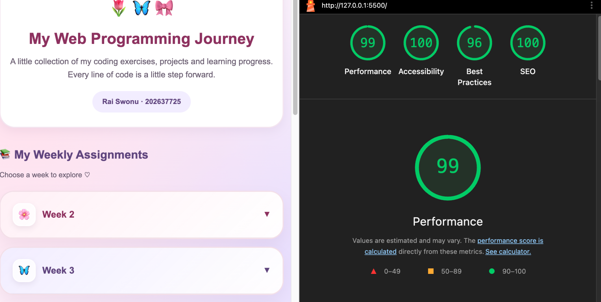
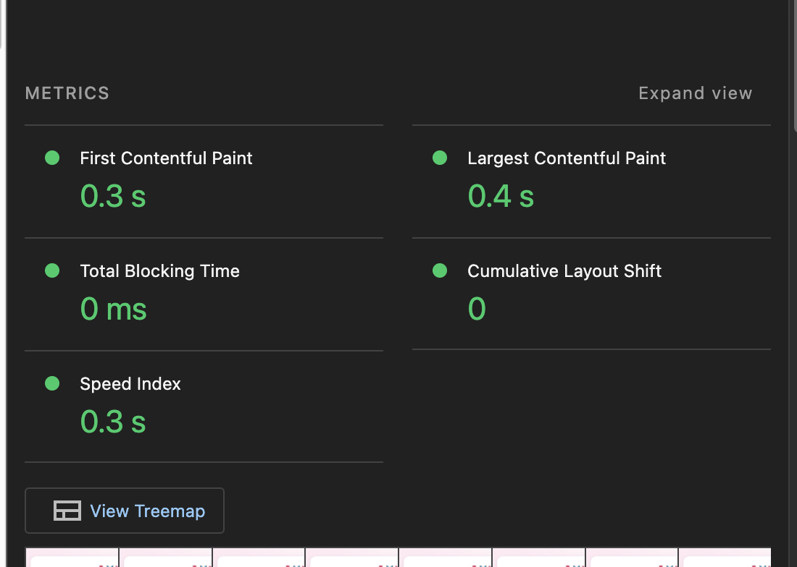
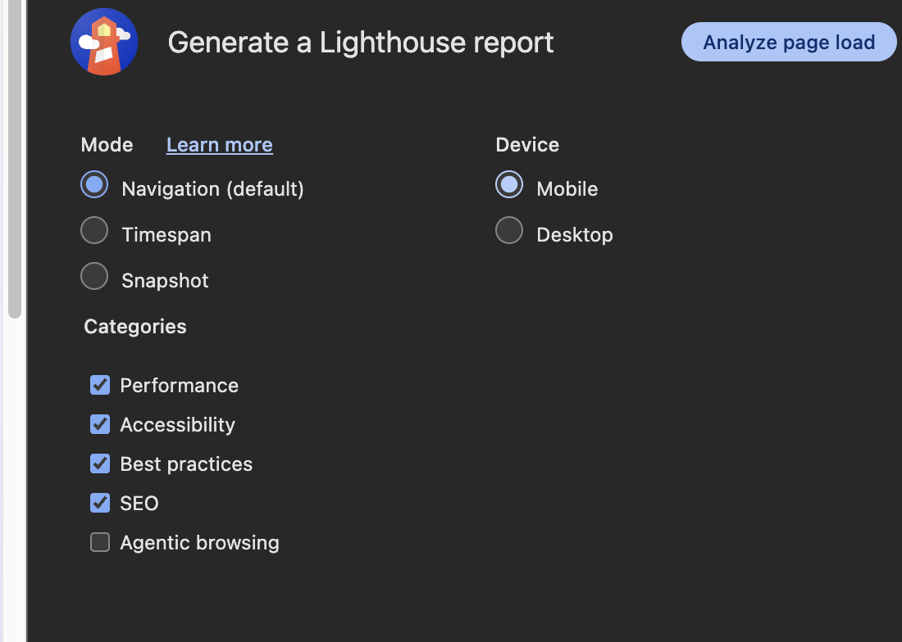
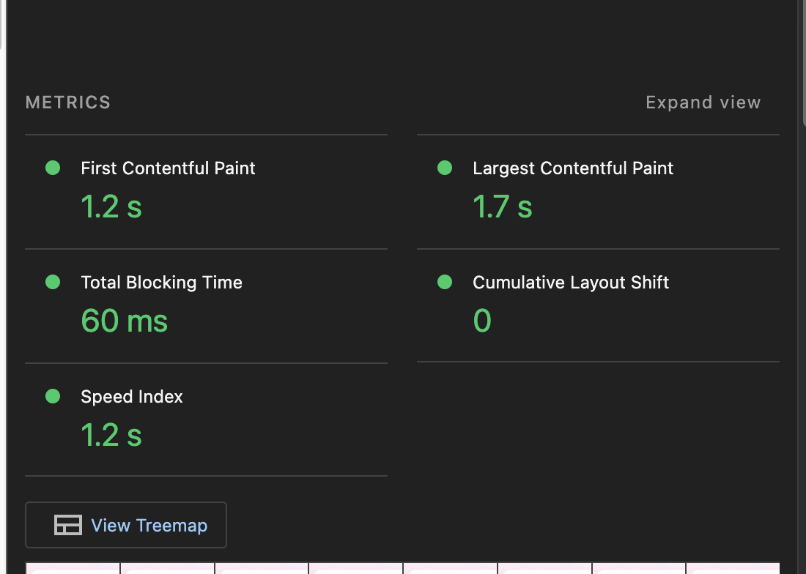
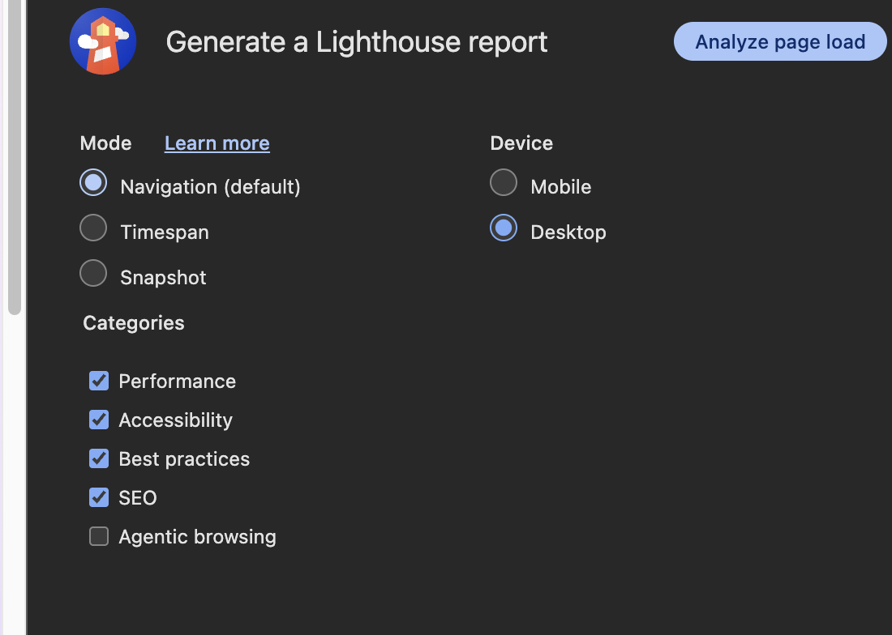
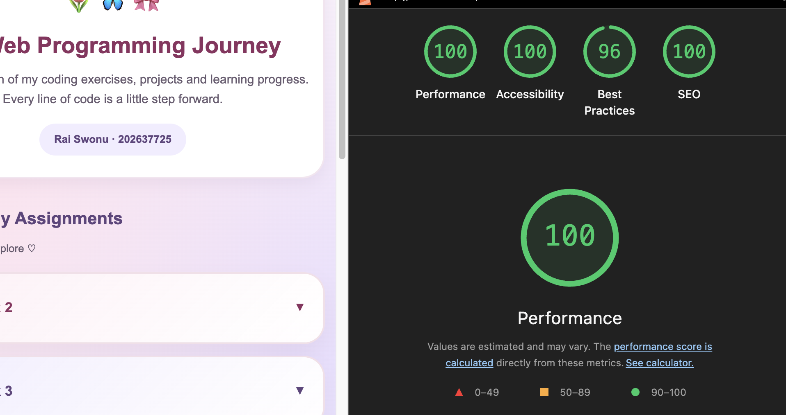

This page is already fully optimized, so I checked the same Lighthouse issues used in the reference audit and confirmed that there were no remaining problems in the final version.
Mobile score100
Desktop score100
Mobile LCP1.1 s
Page weight39 KiB
Step 1 · Final Lighthouse verification

Mobile final audit — 100, no issues found

Desktop final audit — 100, no issues found
Step 2 · The same five checks from the reference report
1. Oversized image: checked, but no problem remained because the image is already appropriately sized.
2. Legacy image format: checked, but no problem remained because the page already uses an optimized format.
3. Missing viewport meta tag: checked, but no problem remained because mobile responsiveness is already configured correctly.
4. Missing width and height attributes: checked, but no problem remained because the layout is already stable.
5. Unprioritized LCP image: checked, but no problem remained because the main image is already correctly prioritized.
// No issues remain<metaname="viewport"content="width=device-width, initial-scale=1"><imgsrc="optimized-image.webp"alt="Content image"width="600"height="400"fetchpriority="high">

Audit and verification

Device and report settings

Optimized result summary
Step 4 · Results after verification

Mobile result — 100, no problems foundDesktop result — 100, no problems found
The page has already been optimized to the maximum level, so the final Lighthouse result shows no performance issues. The same checklist items from the sample report were reviewed, and none of them remain in the final version.
Step 5 · Reflection
The page is already in a strong final state: the image is appropriately sized, modern format practices are in place, mobile viewport support is correct, the image dimensions are defined, and the browser is already prioritizing the key asset. Because of this, there are no remaining performance problems to fix, and the final Lighthouse review confirms the page is fully optimized.